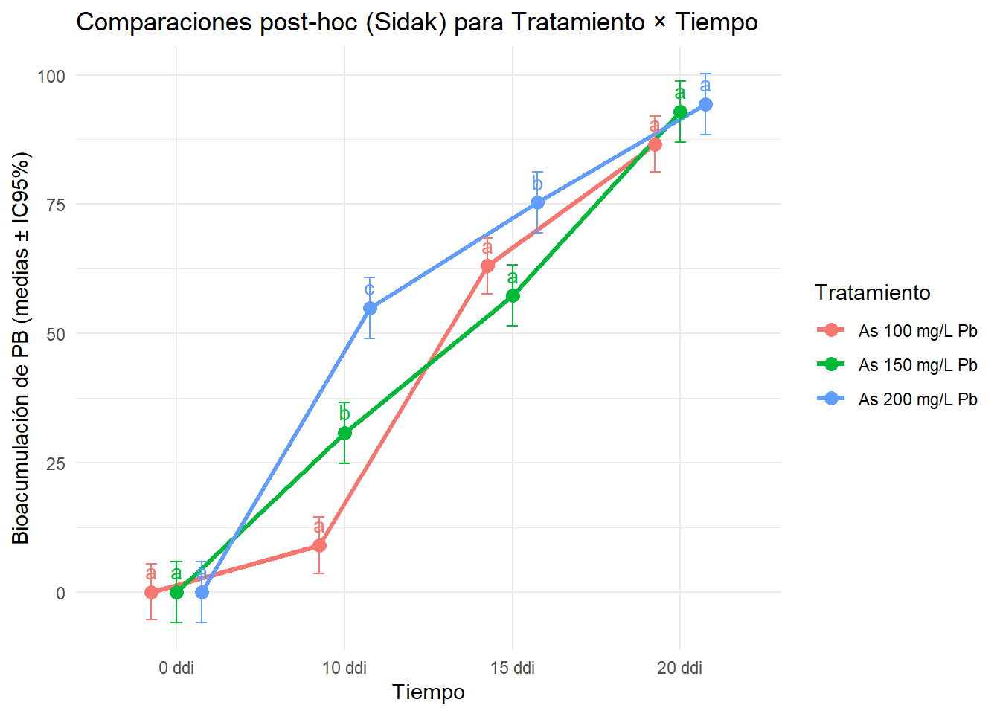
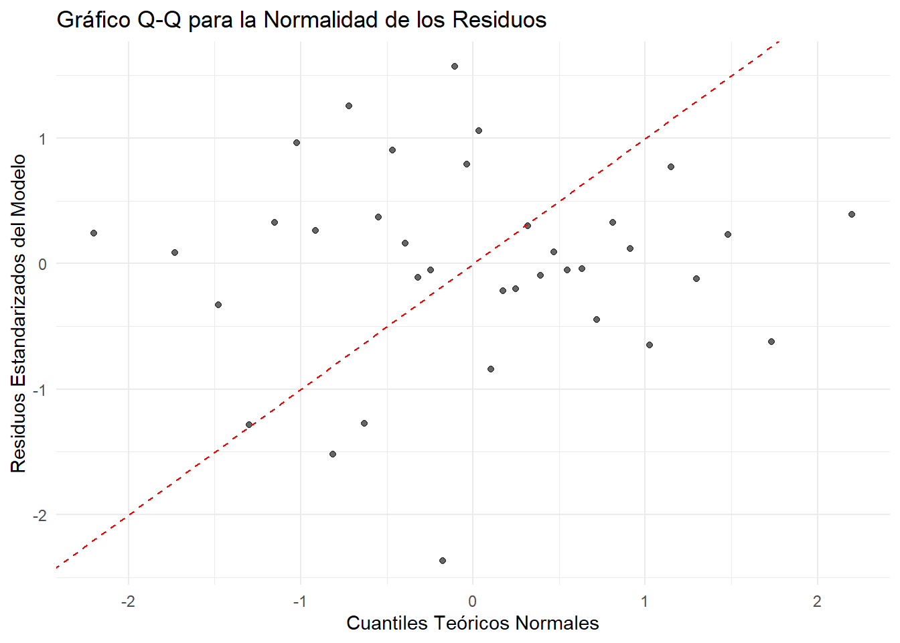

Capitulo 6 Diseño longitudinal (ANOVA de medidas repetidas)
Problema
Nota
El trabajo de grado desarrollado por (Fuentes-Ricaurte et al., 2024)analizó el potencial de tres géneros de hongos mitospóricos, entre ellos Aspergillus sp. (As), para la bioacumulación de los metales pesados cadmio (Cd) y plomo (Pb) en su micelio. Para ello, se emplearon medios de cultivo caldo papa dextrosa (CPD) suplementados con concentraciones de 100, 150 y 200 mg/L de cada metal, considerando el tiempo como un factor determinante en el proceso de bioacumulación.
La cuantificación del metal retenido en el micelio se realizó mediante espectrometría de absorción atómica, técnica que permitió evaluar la eficiencia de remoción. Los resultados mostraron que Aspergillus sp. fue el género más eficiente en la bioacumulación de plomo (Pb), alcanzando hasta 94,38 % de remoción a 200 mg/L, mientras que para cadmio (Cd) se obtuvo una remoción del 92,82 %.
Estructura de la base de datos
Los datos analizados provienen de un experimento microbiológico diseñado para evaluar la bioacumulación de plomo (Pb) por Aspergillus sp. bajo distintas concentraciones en el medio de cultivo.
La base de datos está compuesta por cuatro columnas principales, que describen las variables medidas en el ensayo: Tiempo, Tratamiento, Repetición y Resultado.
Tabla 10.1
Variable
Tipo de variable
Descripción
Tiempo
Categórica
Días después de la inoculación (ddi). Representa los momentos de medición del experimento.
Tratamiento
Categórica
Inoculación de Aspergillus sp. en medios de cultivo suplementados con 100, 150 y 200 mg/L de Pb.
Repetición
Numérica
Identifica el número de repetición del tratamiento (1, 2, 3).
Resultado
Continua (numérica)
Variable cuantitativa que expresa el valor observado del experimento. Puede tomar cualquier valor dentro de un rango, incluidos decimales (p. ej., 75.6, 4.1, 0.2).
Cada combinación de Tratamiento × Tiempo se evaluó por triplicado, lo que permitió analizar la variabilidad experimental y aplicar un modelo mixto lineal de medidas repetidas para estudiar el efecto del tiempo y la concentración de Pb sobre la bioacumulación.
El experimento cumple con las condiciones que caracterizan un diseño de medidas repetidas, dado que las mismas unidades experimentales (frascos de cultivo) fueron evaluadas en distintos momentos del tiempo (0, 10, 15 y 20 días después de la inoculación). En este contexto, se empleó un modelo mixto lineal (LME), el cual permite analizar los efectos fijos del Tratamiento (concentración de Pb) y del Tiempo, considerando simultáneamente la variabilidad aleatoria asociada a cada frasco (Id).
Este enfoque resulta especialmente adecuado para datos dependientes en el tiempo, ya que controla la correlación entre observaciones repetidas dentro de la misma unidad experimental y proporciona inferencias más precisas y robustas que un ANOVA tradicional.
Tabla 10.2
Elemento
Descripción
Tipo
Unidad experimental
Frasco o cultivo individual (Id).
Efecto aleatorio
Factores fijos
- Concentración de Pb (Tratamiento) - Tiempo de incubación (Tiempo).
Efectos fijos
Variable respuesta
Bioacumulación de Pb (Resultado).
Continua
Estructura temporal
Mismas unidades (frascos) medidas en varios tiempos (0, 10, 15 y 20 ddi).
Medidas repetidas
Diseño: Tratamiento (factor entre sujetos) x Tiempo (factor intra-sujetos)
# A tibble: 6 × 5
Id Tiempo Tratamiento Repeticion Resultado
<chr> <chr> <chr> <dbl> <dbl>
1 f1100 0 ddi As 100 mg/L Pb 1 0
2 f2100 0 ddi As 100 mg/L Pb 2 0
3 f3100 0 ddi As 100 mg/L Pb 3 0
4 f1100 10 ddi As 100 mg/L Pb 1 4.5
5 f2100 10 ddi As 100 mg/L Pb 2 9.7
6 f3100 10 ddi As 100 mg/L Pb 3 12.8
summary(DMRT$Resultado)
Min. 1st Qu. Median Mean 3rd Qu. Max.
0.000 3.375 55.725 47.017 78.800 95.650
Verificación del equilibrio del diseño experimental
library(dplyr) # Contar el número de observaciones por combinación de Tratamiento × Tiempo DMRT %>%count(Tratamiento, Tiempo) %>%arrange(Tratamiento, Tiempo)
# A tibble: 12 × 3
Tratamiento Tiempo n
<chr> <chr> <int>
1 As 100 mg/L Pb 0 ddi 3
2 As 100 mg/L Pb 10 ddi 3
3 As 100 mg/L Pb 15 ddi 3
4 As 100 mg/L Pb 20 ddi 3
5 As 150 mg/L Pb 0 ddi 3
6 As 150 mg/L Pb 10 ddi 3
7 As 150 mg/L Pb 15 ddi 3
8 As 150 mg/L Pb 20 ddi 3
9 As 200 mg/L Pb 0 ddi 3
10 As 200 mg/L Pb 10 ddi 3
11 As 200 mg/L Pb 15 ddi 3
12 As 200 mg/L Pb 20 ddi 3
Convertir variables categóricas a factores
Antes de realizar el análisis de varianza (ANOVA), es necesario convertir las variables categóricas —como los tratamientos o los tiempos de muestreo— en factores, ya que este tipo de análisis requiere que los grupos experimentales sean interpretados como categorías y no como valores numéricos.
DMRT$Tratamiento <-as.factor(DMRT$Tratamiento) # Efecto fijo 1: concentración de PbDMRT$Tiempo <-as.factor(DMRT$Tiempo) # Efecto fijo 2: tiempo de exposiciónDMRT$Id <-as.factor(DMRT$Id) # Efecto aleatorio: frasco o unidad experimentalstr(DMRT)
Ajuste del modelo mixto lineal (efectos fijos + aleatorios)
Modelo mixto lineal de medidas repetidas
library(nlme)# Ajuste del modelo mixto lineal (efectos fijos + aleatorios)modelo_mixto <-lme( Resultado ~ Tratamiento * Tiempo, # efectos fijosrandom =~1| Id, # efecto aleatorio por frascodata = DMRT # conjunto de datos)
Interpretación:
Este modelo mixto se usa para analizar datos donde se repiten las mediciones (por ejemplo, la bioacumulación de plomo en diferentes tiempos dentro del mismo frasco o individuo).
Efectos fijos:Tratamiento y Tiempo, además de su interacción (Tratamiento*Tiempo), permiten evaluar si existen diferencias sistemáticas entre tratamientos, entre momentos de tiempo y si el efecto del tratamiento cambia a lo largo del tiempo.
Efecto aleatorio:~1 | Id indica que se considera la variabilidad individual de cada frasco o unidad experimental, controlando así la correlación entre medidas repetidas del mismo sujeto.
Este tipo de modelo mejora la precisión del análisis porque separa la variabilidad intra-sujeto de la variabilidad entre sujetos, algo que un ANOVA tradicional no podría hacer adecuadamente.
Análisis de la Varianza - ANOVA
El análisis de varianza (ANOVA) es una herramienta estadística fundamental en las investigaciones microbiológicas y ambientales, ya que permite determinar si las diferencias observadas en la bioacumulación de plomo (Pb) se deben realmente a los tratamientos experimentales y no al efecto del azar. Cuando se cumplen los supuestos de normalidad y homogeneidad de varianzas, el ANOVA ofrece inferencias sólidas y confiables, lo que fortalece la validez interna del experimento y respalda la interpretación de los resultados obtenidos.
# Resultados del ANOVA del modeloanova(modelo_mixto)
El intercepto no presenta un interés biológico directo, ya que únicamente funciona como punto de referencia dentro del modelo estadístico. En cuanto al factor tratamiento (p < 0.0001), se observaron diferencias significativas entre los distintos tratamientos, lo que indica que la bioacumulación de plomo varía de manera notable según el tipo de tratamiento aplicado. Por otro lado, el tiempo (p < 0.0001) también mostró un efecto significativo sobre la respuesta, evidenciando que los niveles de bioacumulación cambian de forma importante a lo largo del periodo de evaluación. Finalmente, la interacción entre tratamiento y tiempo (p < 0.0001) resultó significativa, lo que sugiere que el efecto de los tratamientos depende del momento de medición; es decir, los tratamientos no presentan el mismo comportamiento en todos los tiempos analizados.
# Resumen detallado del modelosummary(modelo_mixto)
Tiempo = 0 ddi:
Tratamiento emmean SE df lower.CL upper.CL .group
As 100 mg/L Pb 0.0 1.8 8 -4.15 4.15 a
As 200 mg/L Pb 0.0 1.8 6 -4.40 4.40 a
As 150 mg/L Pb 0.0 1.8 6 -4.40 4.40 a
Tiempo = 10 ddi:
Tratamiento emmean SE df lower.CL upper.CL .group
As 100 mg/L Pb 9.0 1.8 8 4.85 13.15 a
As 150 mg/L Pb 30.8 1.8 6 26.38 35.18 b
As 200 mg/L Pb 54.9 1.8 6 50.53 59.34 c
Tiempo = 15 ddi:
Tratamiento emmean SE df lower.CL upper.CL .group
As 150 mg/L Pb 57.3 1.8 6 52.89 61.69 a
As 100 mg/L Pb 63.0 1.8 8 58.88 67.18 a
As 200 mg/L Pb 75.3 1.8 6 70.88 79.69 b
Tiempo = 20 ddi:
Tratamiento emmean SE df lower.CL upper.CL .group
As 100 mg/L Pb 86.6 1.8 8 82.42 90.72 a
As 150 mg/L Pb 92.9 1.8 6 88.53 97.34 b
As 200 mg/L Pb 94.4 1.8 6 89.98 98.79 b
Degrees-of-freedom method: containment
Confidence level used: 0.95
significance level used: alpha = 0.05
NOTE: If two or more means share the same grouping symbol,
then we cannot show them to be different.
But we also did not show them to be the same.
Comparaciones Post-Hoc (EMMEANS + SIDAK)

Tratamientos dentro de cada tiempo
Análisis de la Interacción Tratamiento × Tiempo
Este análisis se centra en identificar cuáles tratamientos difieren significativamente entre sí en cada punto de tiempo evaluado. Se utilizó el método de Letras (agrupamiento) donde los tratamientos que comparten la misma letra en la columna .group no son significativamente diferentes entre sí para un nivel de significancia de \(\alpha = 0.05\).
⏳ Tiempo = 0 ddi
Resultados: En este momento inicial, los tres tratamientos (As 100 mg/L Pb, As 200 mg/L Pb, y As 150 mg/L Pb) se encuentran en el mismo grupo (‘a’).
Conclusión: No existe una diferencia significativa en la media marginal estimada (emmean) entre los tres tratamientos al inicio del experimento.
⏳ Tiempo = 10 ddi
Resultados: Se observa una clara separación de los tratamientos en tres grupos distintos.
As 100 mg/L Pb forma el grupo más bajo (‘a’) con una media de 9.0. As 150 mg/L Pb forma el grupo intermedio (‘b’) con una media de 30.8. As 200 mg/L Pb forma el grupo más alto (‘c’) con una media de 54.9.
Conclusión: A los 10 días, todos los tratamientos son significativamente diferentes entre sí. El efecto o respuesta medida es significativamente mayor a medida que la concentración de plomo (Pb) aumenta (100 < 150 < 200).
⏳ Tiempo = 15 ddi
Resultados: Los tratamientos se agrupan en dos conjuntos.
El grupo ‘a’ está compuesto por As 150 mg/L Pb (57.3) y As 100 mg/L Pb (63.0). Estos no difieren significativamente entre sí.
El tratamiento As 200 mg/L Pb (75.3) forma un grupo distinto (‘b’), que es significativamente mayor que el grupo ‘a’.
Conclusión: A los 15 días, el tratamiento de mayor concentración (As 200 mg/L Pb) es significativamente superior a los otros dos. Sin embargo, no se detecta una diferencia significativa entre las concentraciones de 100 y 150 mg/L de Pb.
⏳ Tiempo = 20 ddi
Resultados: Los resultados son similares a los de 15 ddi, con dos grupos.
As 100 mg/L Pb (86.6) forma el grupo ‘a’. As 150 mg/L Pb (92.9) y As 200 mg/L Pb (94.4) comparten el grupo ‘b’, lo que indica que no son significativamente diferentes entre sí.
El grupo ‘b’ (150 y 200 mg/L Pb) es significativamente diferente y mayor que el grupo ‘a’ (100 mg/L Pb).
Conclusión: Al final del período de evaluación (20 días), la menor concentración de Pb (100 mg/L) resulta en una respuesta significativamente inferior a las dos concentraciones más altas (150 y 200 mg/L). Las concentraciones de 150 y 200 mg/L de Pb tienen efectos estadísticamente equivalentes.
Visualización de resultados
Interpretación: El análisis estadístico de la interacción entre el Tratamiento (diferentes concentraciones de Plomo) y el Tiempo revela una dinámica evolutiva del efecto medido. Si bien la tendencia general muestra un incremento en el resultado para todos los tratamientos a lo largo de los 20 días, la diferenciación estadística varía críticamente según el momento.
Al inicio (0 ddi), no se registraron diferencias significativas entre las tres concentraciones. La máxima diferenciación se alcanzó a los 10 ddi, donde el tratamiento de \(200 \text{ mg/L Pb}\) fue significativamente superior al de \(150 \text{ mg/L Pb}\), y este a su vez fue superior al de \(100 \text{ mg/L Pb}\), estableciendo una clara jerarquía.
Posteriormente, a medida que el experimento progresó (15 y 20 ddi), los tratamientos de mayor concentración convergieron estadísticamente. A los 20 ddi, el tratamiento de \(100 \text{ mg/L Pb}\) resultó ser significativamente inferior y distinto (grupo ‘a’) de los tratamientos de \(150 \text{ mg/L Pb}\) y \(200 \text{ mg/L Pb}\).
En conclusión, el resultado más importante es que, si bien el tratamiento de mayor concentración (\(200 \text{ mg/L Pb}\)) ejerce el efecto más rápido y fuerte en las etapas intermedias, al finalizar el estudio (20 ddi), la concentración de \(150 \text{ mg/L Pb}\) es estadísticamente igual de efectiva que la de \(200 \text{ mg/L Pb}\), y ambas son significativamente más efectivas que la concentración más baja.
Verificación de Supuestos
La verificación de los supuestos estadísticos es esencial para garantizar la validez del ANOVA. Primero se debe evaluar la normalidad de los residuos mediante la prueba de Shapiro-Wilk, que determina si las desviaciones respecto a la normalidad son significativas. Además, es necesario comprobar la homogeneidad de varianzas con la prueba de Bartlett, asegurando que las comparaciones entre tratamientos no estén sesgadas por diferencias en la variabilidad. Si alguno de estos supuestos no se cumple, se recomienda aplicar transformaciones de los datos o emplear modelos con varianzas heterogéneas.
Normalidad de residuos del modelo
residuos <-residuals(modelo_mixto, type ="normalized")# Normalidad de residuos (Shapiro-Wilk)shapiro.test(residuos)
Shapiro-Wilk normality test
data: residuos
W = 0.95276, p-value = 0.1277
Interpretación: La prueba de normalidad de Shapiro-Wilk mostró un valor de p = 0.1277, superior a 0.05, lo que indica que no se rechaza la hipótesis nula de normalidad. Por lo tanto, se concluye que los residuos se distribuyen de manera aproximadamente normal, cumpliendo con este supuesto del modelo.
Gráfico Q-Q de los residuos estandarizados
El gráfico Q-Q es el método estándar para evaluar la normalidad.
# Cargar la librería necesaria para el modelo (si no está cargada)# library(nlme) library(ggplot2)# 1. Extraer los residuos estandarizados del modeloresiduos_std <-residuals(modelo_mixto, type ="normalized")# 2. Crear un marco de datos con los residuos estandarizadosdatos_qq <-data.frame(Residuos_Std = residuos_std,Teoricos =qnorm(ppoints(length(residuos_std))))# 3. Generar el gráfico Q-Qggplot(datos_qq, aes(x = Teoricos, y = Residuos_Std)) +geom_point(alpha =0.6) +geom_abline(intercept =0, slope =1, color ="red", linetype ="dashed") +theme_minimal() +labs(title ="Gráfico Q-Q para la Normalidad de los Residuos",x ="Cuantiles Teóricos Normales",y ="Residuos Estandarizados del Modelo" )

# Interpretación: Los puntos deben seguir de cerca la línea roja.# --- B. Prueba de Shapiro-Wilk (Opcional, pero complementaria) ---# shapiro.test(residuos_std) # Interpretación: Si el valor p > 0.05, no se rechaza la normalidad.
Homogeneidad de Varianza (Homocedasticidad)
# Homogeneidad de varianzas (Bartlett)bartlett.test(Resultado ~ Tratamiento, data = DMRT)
Bartlett test of homogeneity of variances
data: Resultado by Tratamiento
Bartlett's K-squared = 0.036607, df = 2, p-value = 0.9819
Interpretación: La prueba de homogeneidad de varianzas de Bartlett arrojó un valor de p = 0.9819, muy superior a 0.05, por lo que no se rechaza la hipótesis nula de igualdad de varianzas. Esto indica que las varianzas entre los tratamientos son homogéneas, cumpliéndose así el supuesto de homogeneidad requerido para el análisis.
Gráfico de Residuos vs. Valores Ajustados
# 1. Extraer los valores ajustados (predichos) y los residuosdatos_homocedasticidad <-data.frame(Valores_Ajustados =fitted(modelo_mixto),Residuos_Std =residuals(modelo_mixto, type ="normalized"))# 2. Generar el gráficoggplot(datos_homocedasticidad, aes(x = Valores_Ajustados, y = Residuos_Std)) +geom_point(alpha =0.6) +geom_hline(yintercept =0, linetype ="dashed", color ="red") +theme_minimal() +labs(title ="Gráfico de Residuos vs. Valores Ajustados (Homocedasticidad)",x ="Valores Ajustados (Predichos)",y ="Residuos Estandarizados" )
# Interpretación: Los puntos deben dispersarse aleatoriamente alrededor de la línea y=0, # sin formar patrones de embudo o conos.
Independencia/Estructura de Correlación
Este supuesto verifica si la dependencia temporal restante dentro de cada unidad experimental (Id) ha sido modelada correctamente.
Gráfico de Residuos vs. Tiempo por Unidad Experimental
# 1. Preparar el marco de datos con Residuos, Tiempo e Iddatos_independencia <-data.frame(Tiempo = modelo_mixto$data$Tiempo,Id = modelo_mixto$data$Id,Residuos =residuals(modelo_mixto, type ="normalized"))# 2. Generar el gráficoggplot(datos_independencia, aes(x = Tiempo, y = Residuos, group = Id)) +geom_line(alpha =0.3) +geom_point(aes(color = Id), show.legend =FALSE) +# Color por Id para diferenciacióngeom_hline(yintercept =0, linetype ="dashed", color ="red") +theme_minimal() +labs(title ="Evaluación de la Correlación Temporal de los Residuos",subtitle ="Si hay patrones, la estructura de correlación debe revisarse",x ="Tiempo (ddi)",y ="Residuos Estandarizados" )
# Interpretación: Si hay un patrón de correlación visible (líneas que siguen una forma # similar a lo largo del tiempo), el modelo podría necesitar una estructura de # correlación explícita (p. ej., corAR1) añadida al objeto lme.
Interpretación: El análisis de los residuos indica una violación del supuesto de independencia temporal. Se observa un patrón sistemático (subida y bajada) en los residuos a lo largo del tiempo que se repite en las unidades experimentales, lo cual sugiere que el modelo actual, con solo una intercepción aleatoria, no está capturando adecuadamente la correlación temporal entre las mediciones. Para obtener estimaciones de error estándar válidas y garantizar la fiabilidad de las comparaciones post-hoc, es obligatorio reajustar el modelo lineal mixto incluyendo una estructura de correlación explícita (como AR(1)).